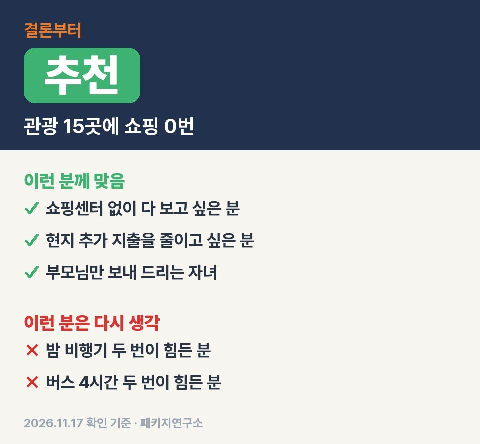
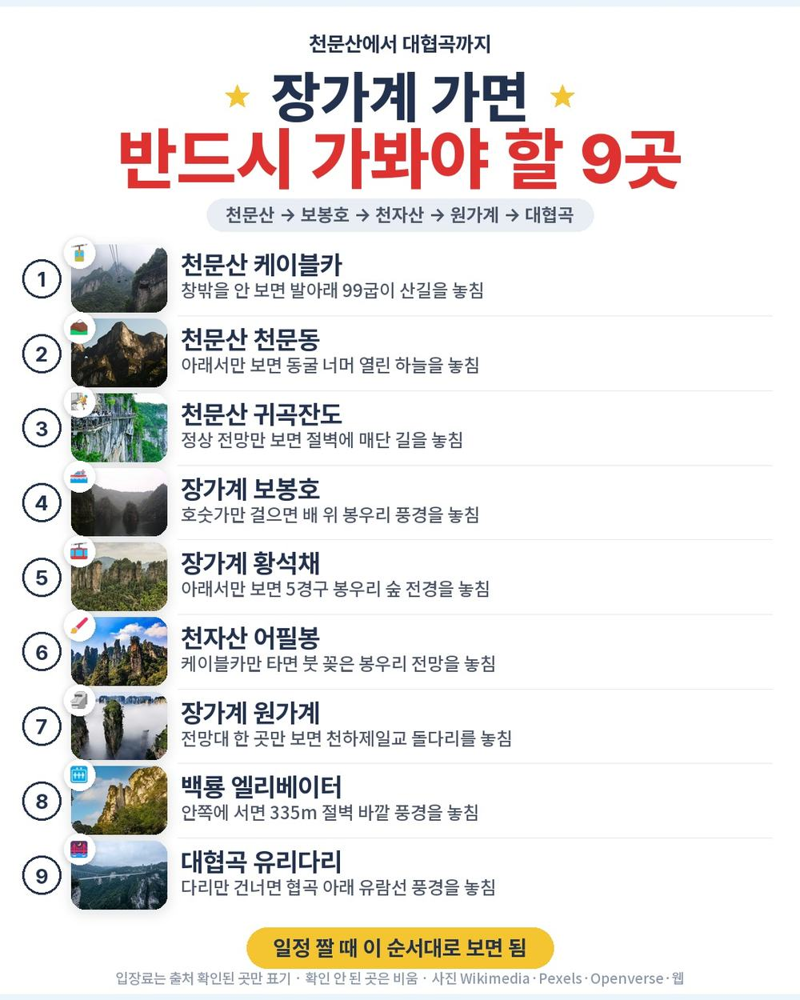
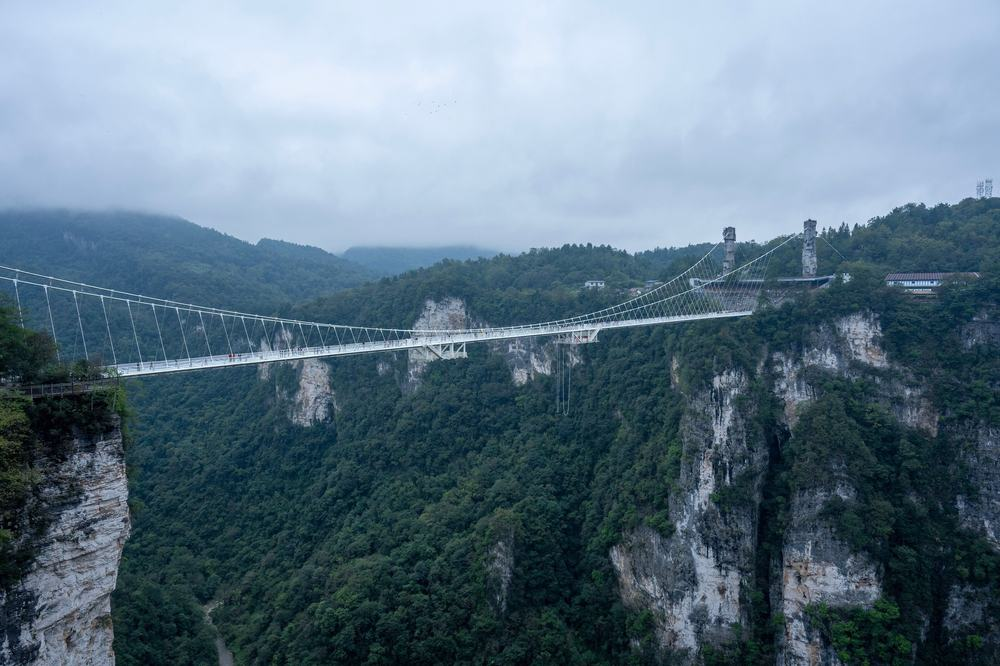
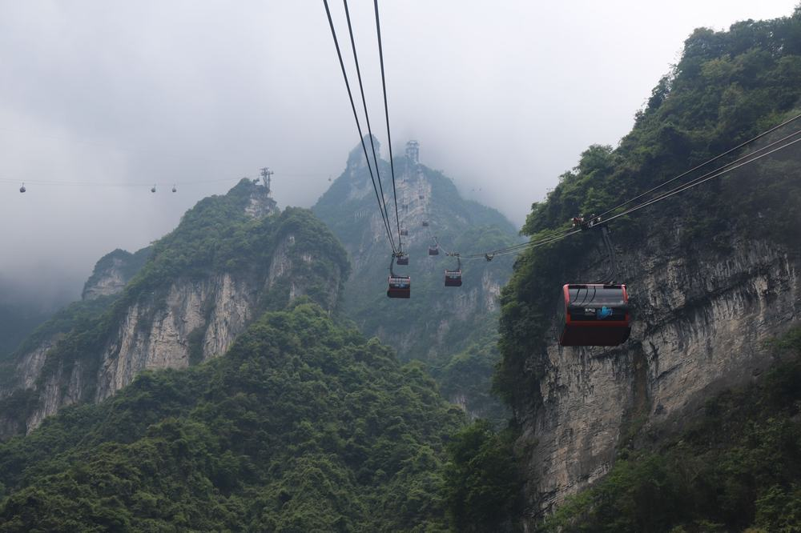
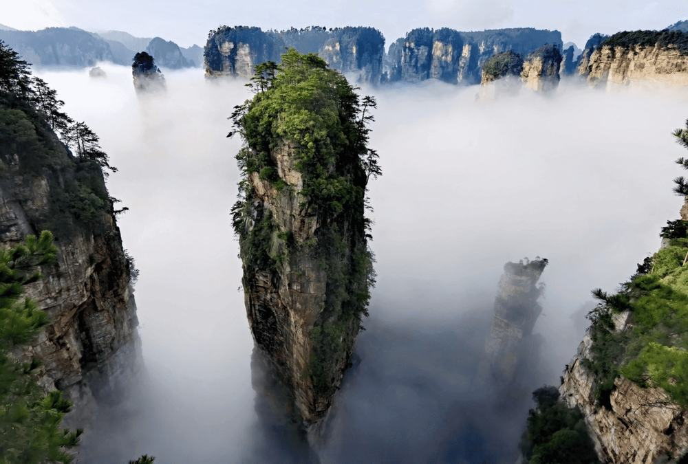

천문산·원가계·대협곡 유리다리를 포함해 관광 15곳이 값 안에 있는데, 쇼핑센터 방문은 한 번도 없음.
직접 다녀온 후기가 아니고 일정표와 포함·불포함 원문을 한 칸씩 따져 본 정리임.
결론 — 추천. 대한항공 직항, 호텔 3박, 관광 15곳, 가이드·기사 경비, 1억원 여행자보험이 124만 9,900원 안에 있고 쇼핑·선택관광은 0. 다만 밤 비행기 두 번이 힘든 분은 맞지 않음.

오늘 기준 출발일별 요금 보기
https://naver.me/I5wTKjk8

| 항목 | 내용 |
|---|---|
| 가격 | 1인 1,249,900원 (성인·소아 같음 · 12월 출발 기준) · 2인 2,499,800원 |
| 여행사 | 노랑풍선 |
| 항공 | 대한항공 직항 (KE145·KE146) · 인천 20:20 → 창사 22:55 / 창사 00:05 → 인천 04:15 |
| 숙소 | 창사 1박 + 장가계 2박 · 특급호텔 표기 · 이름은 출발 2일 전 안내 |
| 일정 | 3박 5일 · 관광 15곳 · 쇼핑 0 · 선택관광 0 · 가이드·기사 경비 포함 |
▶ 내 출발일 오늘 기준 요금 확인 (제휴 링크 · 예약 시 수수료를 받으며 가격은 같습니다)
▶ 11월 17일 기준 장가계 패키지 최저 79만 9천원부터 — 출발일별 값 한 화면에: 비교 페이지
| 번호 | 내용 | 한 줄 답 |
|---|---|---|
| 1 | 이 값에 들어 있는 것 | 관광 15곳 |
| 2 | 현장에서 더 낼 돈 | 매너팁 정도 |
| 3 | 일정과 체력 | 버스 4시간 두 번 |
| 4 | 자유여행으로 짜면 | 항공값 조회 실패 |
| 5 | 맞는 분 · 안 맞는 분 | 3 대 3 |
케이블카 세 번과 엘리베이터, 모노레일, 유람선까지 탈것이 다 값 안에 들어 있음.
- 항공: 대한항공 인천–창사 직항 왕복, 각종 TAX 포함
- 숙소: 호텔 3박(창사 1 · 장가계 2), 2인 1실, 셋이면 간이침대
- 식사: 호텔 조식 3번, 점심 3번 한식, 저녁 한식·호텔식·현지식
- 관광: 천문산 케이블카+천문동, 귀곡잔도·유리잔도·천문산사, 72기루, 천문호선쇼, 보봉호, 황석채, 천자산, 원가계, 십리화랑, 금편계곡, 황룡동굴, 대협곡 유리다리+유람선
- 그 밖: 발마사지+전신마사지, 기사·가이드 경비, 1억원 여행자보험

다른 장가계 상품 일정표엔 천문호선쇼 60달러, 대협곡 100달러짜리 선택관광으로 붙는 경우가 있음. 이 상품은 둘 다 처음부터 들어 있어서 값이 높아 보이는 이유가 여기서 풀림.
꼭 더 내야 하는 돈은 없고 매너팁과 개인 용돈만 남음.
| 항목 | 금액 | 필수/선택 | 비고 |
|---|---|---|---|
| 가이드·기사 경비 | 0원 | — | 상품가에 포함 |
| 선택관광 · 쇼핑 | 0원 | — | 노옵션·노쇼핑 |
| 매너팁 (식당·호텔·마사지) | 자율 | 선택 | 원문: 안 내도 불이익 없음 |
| 개인 용돈 | 1인 200~400위안 정도 | 선택 | 원문 환전 안내 |
| 합계 (2인 필수분) | 0원 | 상품가 2인 2,499,800원 그대로 |
- 혼자 방을 쓰면 1인 18만원(1박 6만원)이 붙음
- 외국 국적이면 1인 7만원 추가
- 예약금은 1인 30만원을 먼저 내는 방식임
걷는 양은 2·3일차에 몰리고 버스 4시간이 2일차 아침과 4일차 오후에 한 번씩 있음.
| 일차 | 가는 곳 | 버스 | 걷기 | 점심 · 저녁 |
|---|---|---|---|---|
| DAY 1 | 인천 20:20 → 창사 22:55 → 호텔 | 약 30분 | 적음 | 없음 · 기내식 |
| DAY 2 | 창사 → 장가계 → 천문산·천문동·잔도·천문산사 → 72기루 → 천문호선쇼 | 약 4시간 30분 | 많음 | 한식 · 한식 |
| DAY 3 | 보봉호 → 황석채 → 천자산 → 원가계 → 십리화랑 → 금편계곡 → 마사지 | 약 1시간 30분 | 많음 | 한식 · 호텔식 |
| DAY 4 | 황룡동굴 → 대협곡 유리다리·유람선 → 창사 | 약 4시간 30분 | 보통 | 한식 · 현지식 |
| DAY 5 | 창사 00:05 → 인천 04:15 | 약 20분 | 적음 | 없음 · 없음 |
- 비행: 갈 때 약 3시간 35분, 올 때 약 3시간 10분(시차 포함 셈)
- 천문산은 케이블카 편도 약 30분, 에스컬레이터 약 20분 구간이 있음
- 겨울엔 유리잔도가 미끄러워 입장이 통제될 수 있고 환불은 없음

케이블카·엘리베이터·모노레일 구간이 많아서 오르막을 다 걸어 오르진 않음. 그래도 잔도와 전망대 계단은 걸어야 해서 무릎이 불편한 분은 가이드에게 미리 말해 두는 게 좋음.
이 상품 조건 한눈에 (출발일 달력·두 분 값·비슷한 상품과 비교)
https://pkg-lab.com/pkg/CZP1011KE06/?utm_source=ghpages&utm_medium=post&utm_campaign=daily
같은 목적지 다른 여행사 패키지, 쇼핑·선택관광·가이드 경비까지 비교
https://pkg-lab.com/dest/DYG/m/2026-12/?utm_source=ghpages&utm_medium=post&utm_campaign=daily
항공값을 오늘 조회하지 못해 합계는 못 냈고 직접 짜면 따로 챙길 칸만 적음.
| 항목 | 금액 | 근거 |
|---|---|---|
| 인천–창사 직항 왕복 | 확인 못 함 | 2026-11-17 마이리얼트립 조회 실패 — 숫자를 지어내지 않음 |
| 호텔 3박 | 확인 못 함 | 날짜·호텔마다 다름 |
| 식사 | 따로 | 패키지는 조식 3번 + 점심·저녁 포함 |
| 공항 이동 | 따로 | 패키지는 창사–장가계 전용 버스 포함 |
| 케이블카·유리다리·공연 | 따로 | 패키지는 관광 15곳 포함 |
| 여행자보험 | 따로 | 패키지는 1억원 보험 포함 |
| 가이드 | — | 자유여행은 없음 |
- 창사공항에서 장가계까지 4시간 길을 직접 가려면 기차나 차편을 따로 알아봐야 함
- 천문산·원가계·대협곡은 매표소와 입구가 서로 떨어져 있어 하루 동선을 짜기가 까다로움
- 항공·호텔 실값은 날짜를 정한 뒤 견줘 보는 게 정확함

걸리는 건 밤 비행기와 긴 버스이고 둘 다 누구에게만 문제인지가 분명함.
| 맞는 분 | 안 맞는 분 |
|---|---|
| 쇼핑센터 없이 다 보고 싶은 분 | 밤 비행기 두 번이 힘든 분 |
| 현지 추가 지출을 줄이고 싶은 분 | 버스 4시간 두 번이 힘든 분 |
| 부모님만 보내 드리는 자녀 | 호텔을 미리 정해 두고 싶은 분 |
이 상품 게시판엔 후기가 902개 쌓였고, 일정이 알차다는 키워드가 가장 많음. 안개나 비로 풍경이 가렸다는 아쉬움도 몇 건 있어서 우비와 겉옷은 챙겨 두는 편이 나음.
Q. 장가계 패키지 노쇼핑 노옵션이 맞나요?
A. 맞음. 일정표 참고사항에 노쇼핑 일정이라고 적혀 있고 선택관광 항목도 없음.
Q. 장가계 패키지 가이드 경비는 따로 내나요?
A. 안 냄. 기사·가이드 경비가 포함 항목에 들어 있고 매너팁만 자율임.
Q. 장가계 패키지 가격은 이 상품이 얼마인가요?
A. 12월 출발 기준 1인 124만 9,900원, 2인 249만 9,800원. 출발일마다 값이 달라서 날짜별로 확인해야 함.
케이블카부터 유리다리까지 탈것과 공연이 다 들어 있어서 현지에서 지갑 열 일이 적은 구성.
밤 비행기와 버스 4시간이 괜찮은 분, 특히 부모님만 보내 드리려는 자녀에게 잘 맞음.
출발일에 따라 값이 달라서 가시려는 날짜 요금부터 확인하시면 됨.
오늘 기준 출발일별 요금 보기
https://naver.me/I5wTKjk8
이 글에는 네이버 제휴 링크가 포함되어 있으며, 링크를 통해 예약하시면 일정 수수료를 받습니다. 가격은 동일합니다. 가격과 구성은 2026년 11월 17일 확인 기준이며 출발일에 따라 달라질 수 있습니다.
▶ 장가계 패키지 오늘 값 나란히 비교
▶ 같은 목적지 다른 여행사 패키지, 쇼핑·선택관광·가이드 경비까지 비교: pkg-lab.com